Portfolio
Nuestra Colectividad en Imagenes

 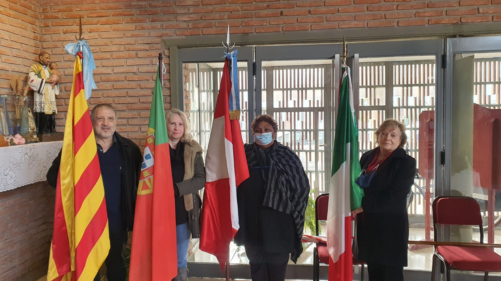
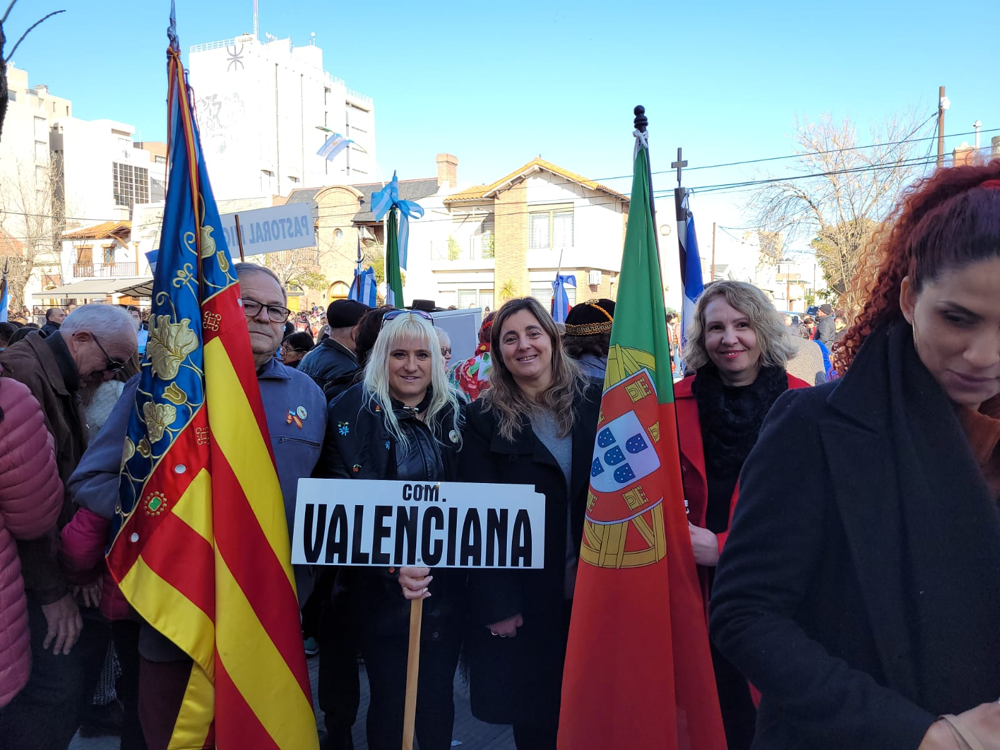
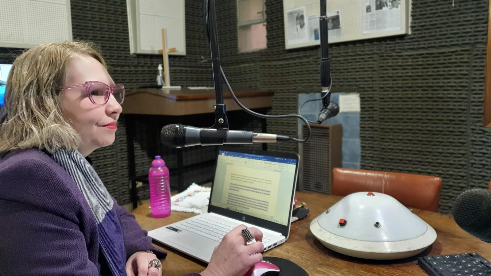
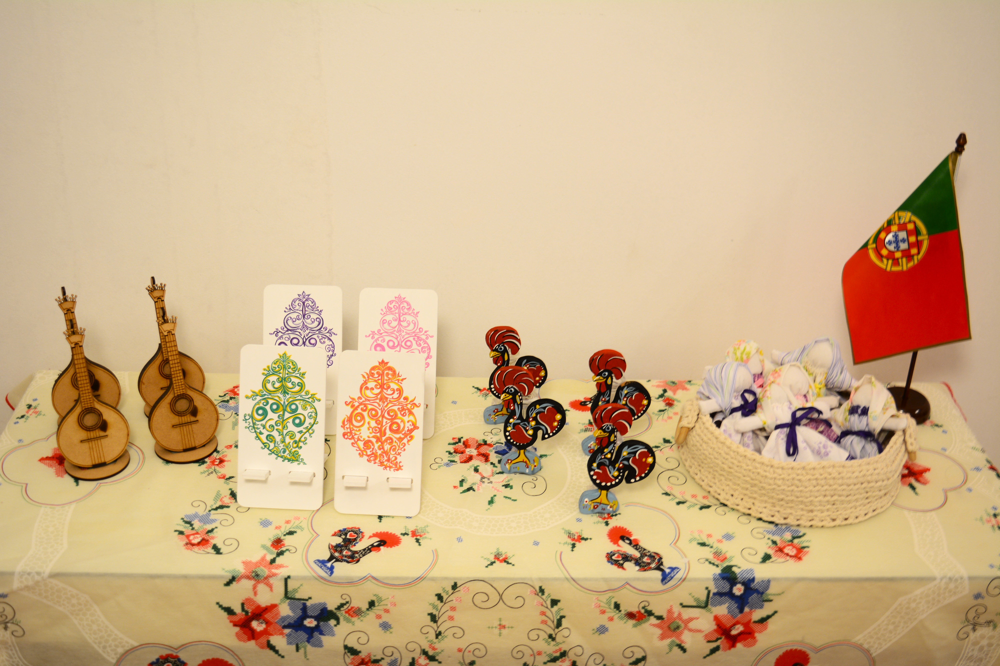
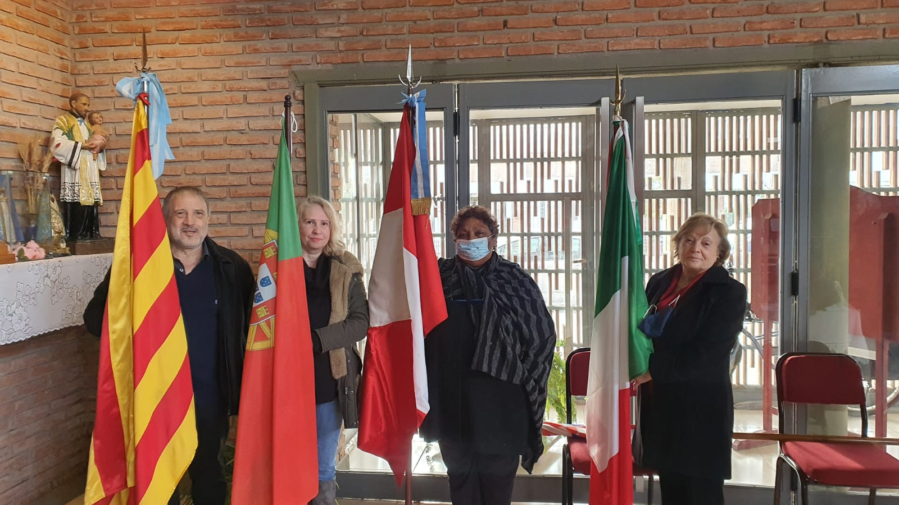
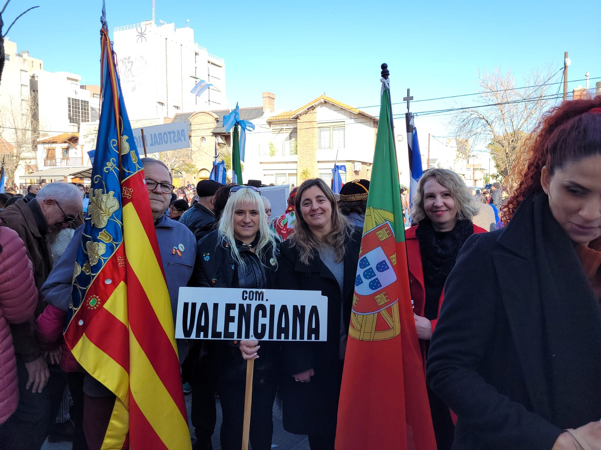
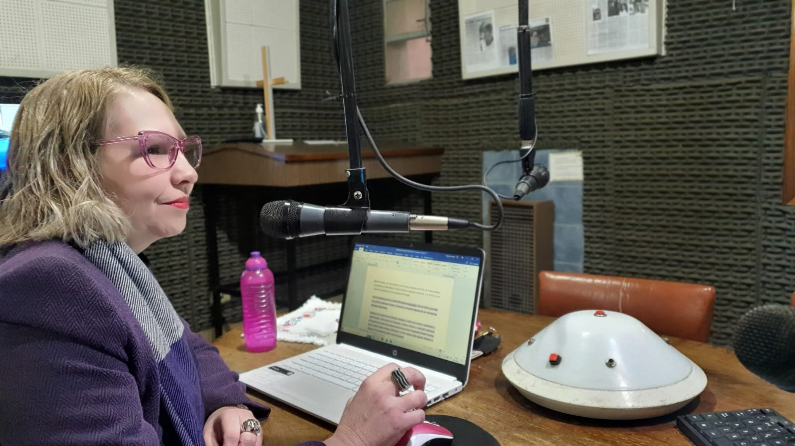
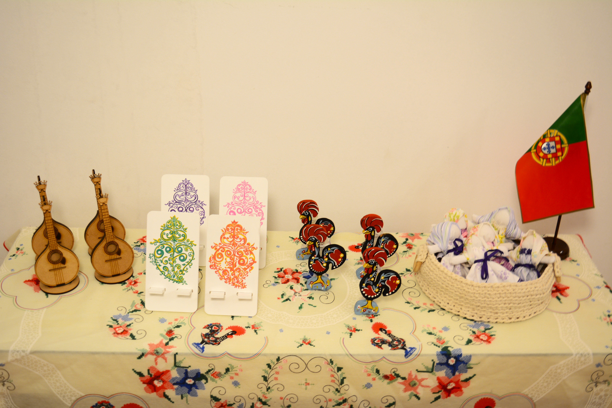
Nosotros
Portugueses en Bahía Blanca es una iniciativa que surgió a principios del 2022 y que tiene como objetivo dar a conocer, mediante diferentes actividades, el acervo cultural luso, a la vez de conocer y conectar a los portugueses y descendientes que actualmente residen en la ciudad.
Integrantes del Centro de Colectividades Extranjeras de Bahía Blanca, participamos representando a Portugal en ferias, museos, desfiles, difusiones radiales, y demás actividades que organiza el CCEBB, siempre promoviendo los valores solidarios, el voluntariado y el compromiso con nuestras raíces.
Portfolio
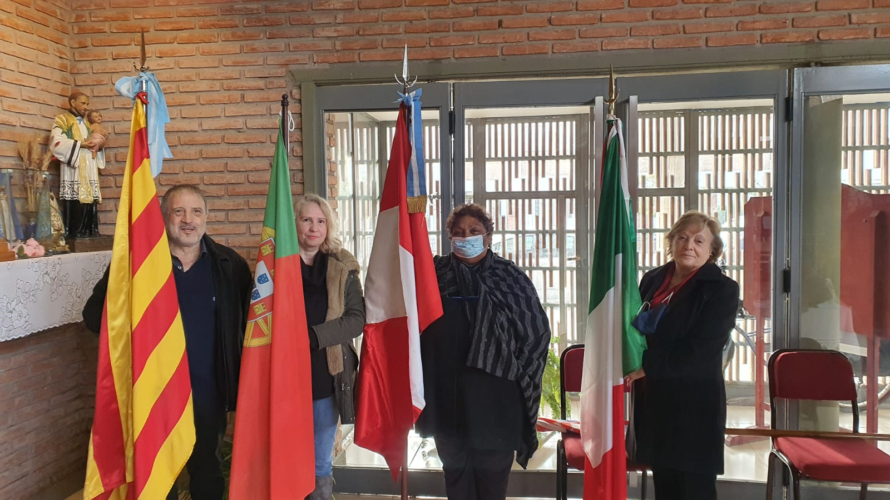
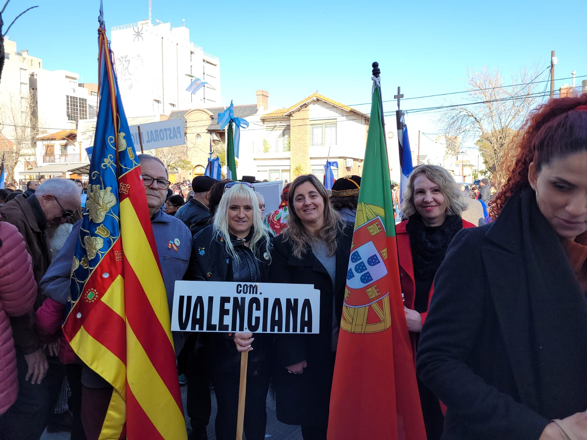
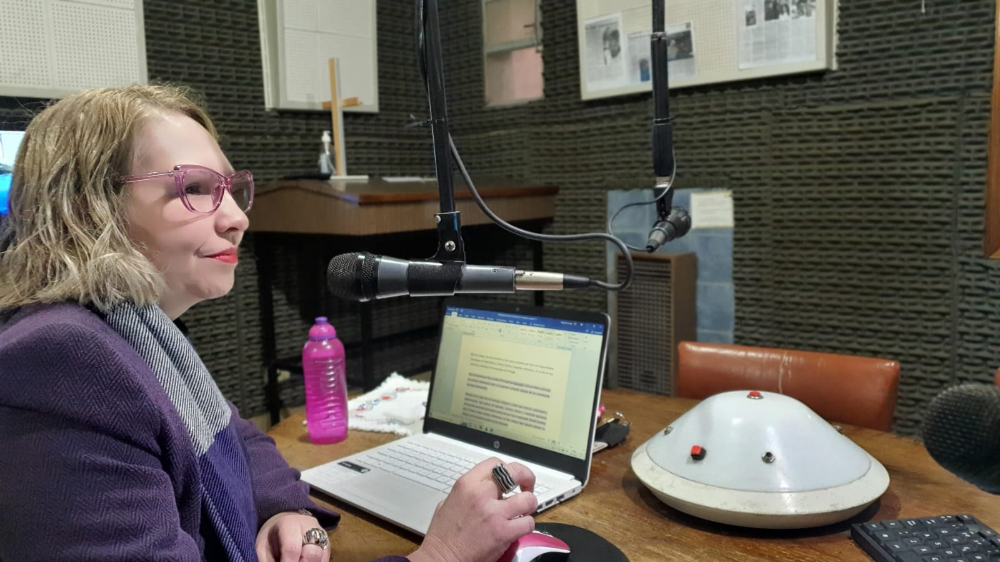
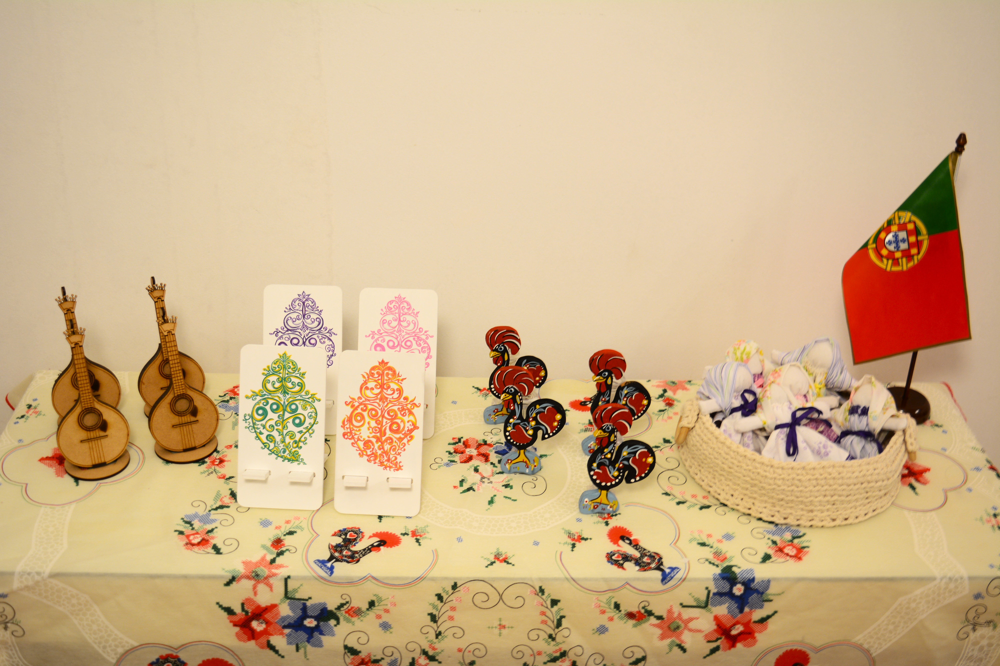
Productos
Podras tener un pequeño recuerdo de Portugal
Novedades
El 12 de Septiembre se realizo un festival de Musica y Danza del Mundo en donde nuestro ballet presento una coreografia de marchas como las que se realizan en honor a los Santos Populares.
Todos los martes se emite el Programa del Ciclo de Colectividades Extranjeras, del cual participamos aportando musica tradicional y dando a conocer diferentes aspectos de la cultura portuguesa.
Como mienbros del CCEBB asistimos a diferentes actos institucionales organizados por el Municipalidad de Bahia Blanca.